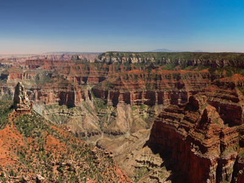
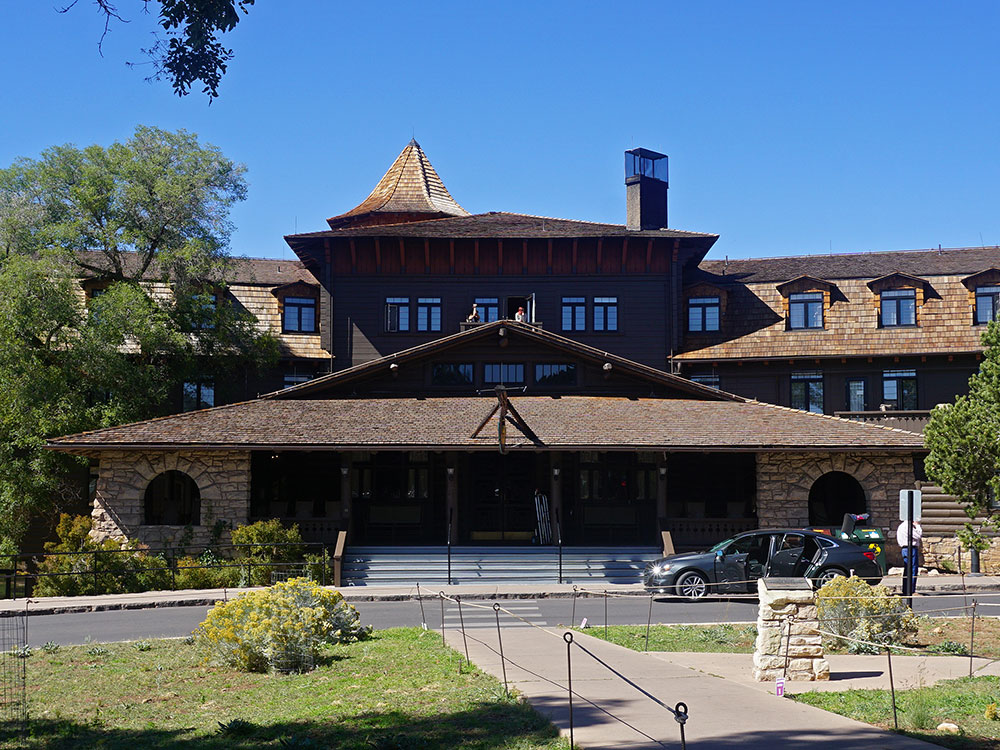
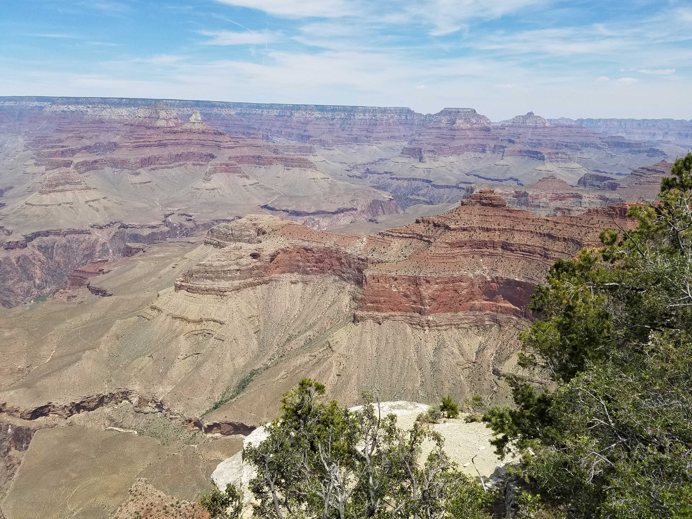
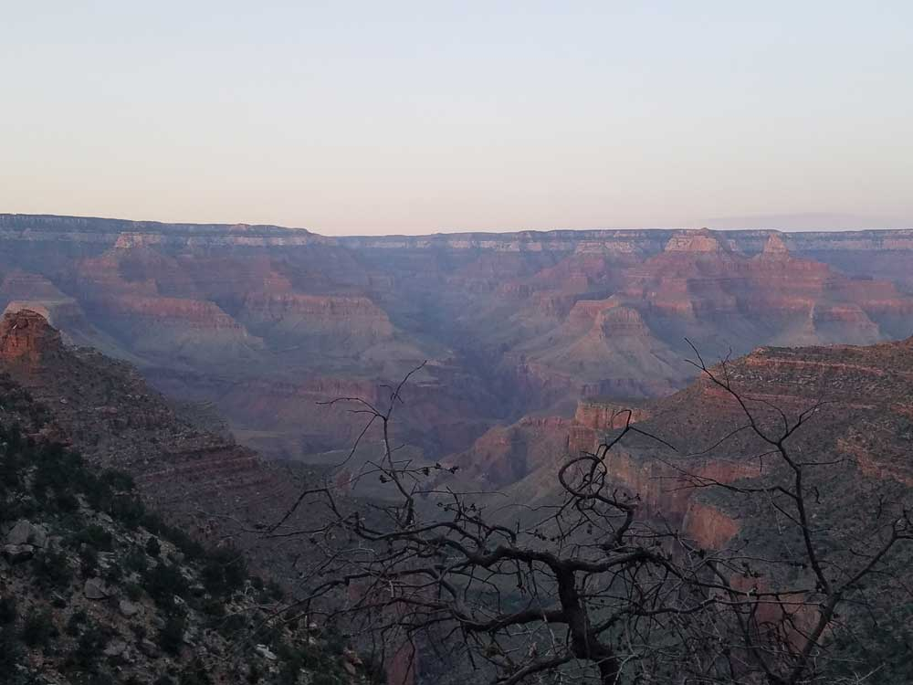
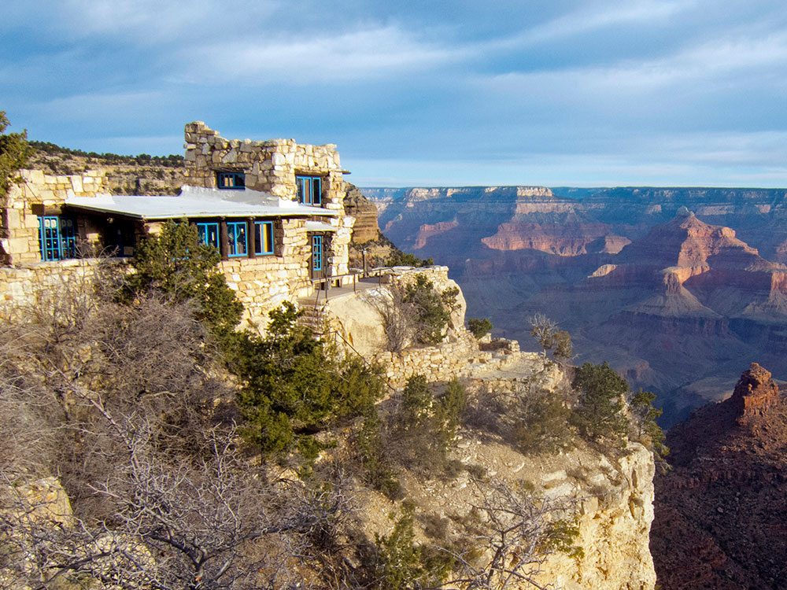
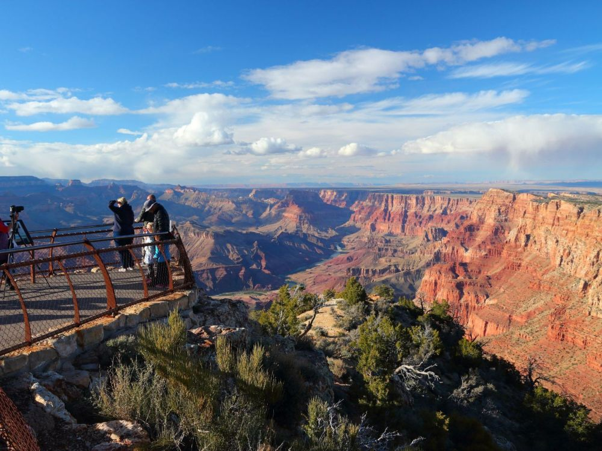
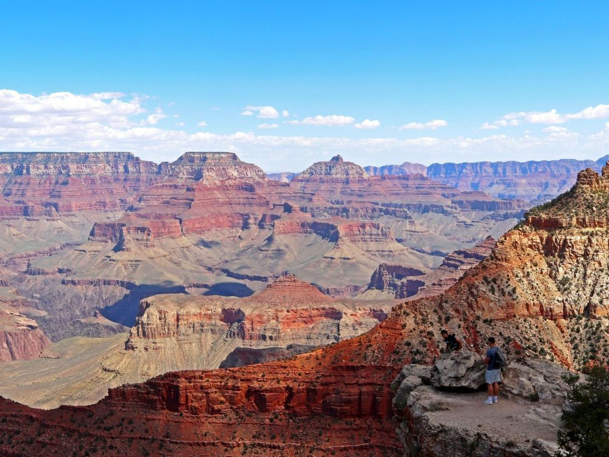
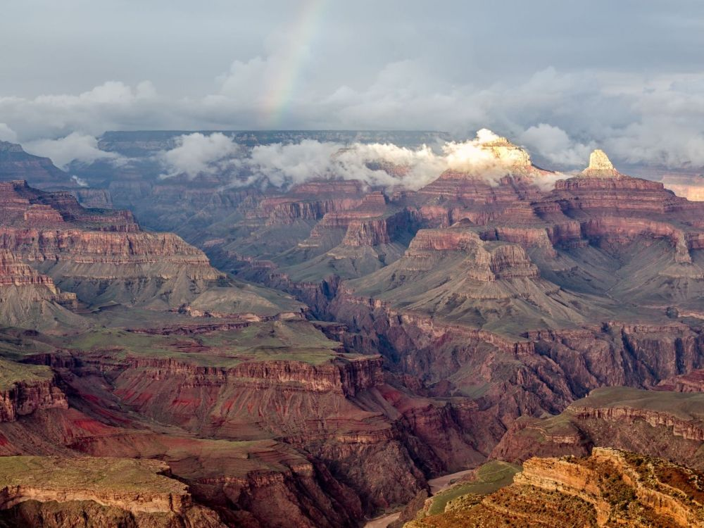
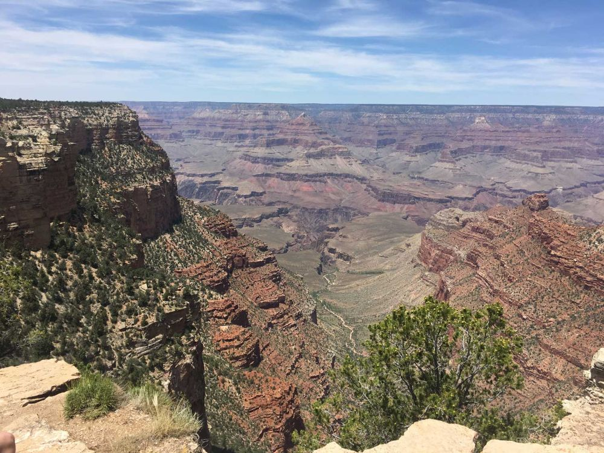
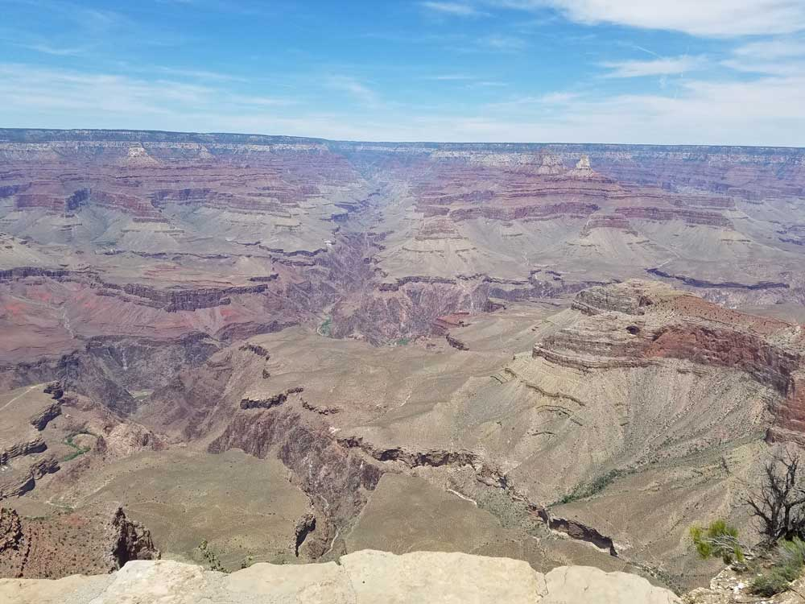

Grand Canyon National Park Travel Guide
Park's central feature is the Grand Canyon, a gorge of the Colorado River, which is often considered one of the Wonders of the World
General Information
North Rim: Open mid-May to mid-October (closed in winter)
Visitor centers and shuttle services have seasonal hours
Motorcycle: $30
Individual (on foot or bicycle): $20
Annual Grand Canyon Pass: $70
America the Beautiful Passes accepted
Not permitted below the rim or on park shuttle buses
Williams, AZ (60 mi)
Flagstaff, AZ (80 mi)
North Rim: Mid-May to mid-October
Best visited April–May and September–October for mild weather and fewer crowds
How to Get There
South Rim: From Flagstaff (87 mi): take I-40 W to AZ-64 N in Williams. Take exit 165. Turn right onto AZ-64 N. Follow AZ-64 N 46 min to Center Rd. Follow Center Rd to Apache Alley in Grand Canyon Village.
North Rim: From South Rim (295 mi): Take Center Rd to AZ-64 S. Get on I-40 E in Williams. Follow I-40 E and US-89 N to US-89A N in Bitter Springs. Continue on US-89A N. Drive to AZ-67 S to North Rim.
North Rim: From Page, AZ (123 mi): Take US-89 South. Turn right onto US-89A N. Turn left ont AZ-67 S.
Overview
Grand Canyon National Park in northwestern Arizona protects one of the world's great natural wonders, a canyon carved by the Colorado River that is 277 miles long, up to 18 miles wide, and more than a mile deep. Its layered walls lay bare nearly two billion years of geologic history, and the colors shift from red and orange to purple and gold as the light changes through the day. The park covers more than 1.2 million acres, draws over six million visitors a year, and was named a UNESCO World Heritage Site in 1979.
The canyon became well known to Americans in the 1880s as railroads and early tourism arrived. President Theodore Roosevelt, a major supporter of protecting it, visited in 1903 and urged that it be left unspoiled, calling it "the one great sight which every American should see." He declared it a national monument in 1908, and it became a national park in 1919. People come for the views from the rim, for hikes into the canyon, for mule rides, river trips, and helicopter flights, and simply to stand at the edge and take in the size of it.
Park Sections
The park's main visitor areas are the South Rim and North Rim. The South Rim, reached via State Route 64 near Tusayan, is open all year and accounts for about 90% of visits. It is centered on Grand Canyon Village, with lodging, dining, viewpoints, the Rim Trail, and free shuttle buses, with Desert View Drive heading east and Hermit Road west. The higher North Rim, at over 8,000 feet, is quieter and is open mid-May to mid-October, and it is a 4.5-hour, 220-mile drive from the South Rim. At the bottom, Phantom Ranch is reached only on foot, by mule, or by river. Remote Tuweep is reached by a long dirt road.
Sightseeing and Exploring the Park
On the South Rim, Mather Point near the visitor center is the first view for many visitors, and the Rim Trail connects many viewpoints from there to Grand Canyon Village. Hermit Road, 7 miles west of the Village, has viewpoints such as Hopi Point, a favorite for sunset, and Mohave Point, and is closed to private vehicles most of the year (served by shuttle). The 25-mile Desert View Drive heads east past Yaki Point, Grandview Point, Moran Point, and Lipan Point to the Desert View Watchtower, a stone tower built in 1932 with views over the Painted Desert. On the North Rim, Bright Angel Point, Cape Royal, and Point Imperial, the highest point on either rim at 8,803 feet, are the main viewpoints.
Hiking
The easiest hike is the Rim Trail, a mostly flat, partly paved path of about 13 miles with many access points. The two best-known trails below the rim are the Bright Angel Trail and the South Kaibab Trail, both steep, with climbs of several thousand feet. South Kaibab has views from Ooh Aah Point (about 1.8 miles round trip) and Skeleton Point. Bright Angel has rest houses at 1.5 and 3 miles with water in season. Hiking from the rim to the river and back in a single day is not recommended, because of the heat and the climb back up; carry plenty of food and water, and know that rescues are common. On the North Rim, the Bright Angel Point Trail is a short walk with a big view, and the North Kaibab Trail goes to the river.
Other Activities
Mule rides along the rim or down to Phantom Ranch operate from both rims. Colorado River trips range from calm one-day floats from Page to multiday whitewater rafting expeditions, which require permits or a commercial outfitter. Helicopter and airplane tours depart from Tusayan, the Grand Canyon Railway runs a train from Williams to Grand Canyon Village, and rangers give talks and walks. Visitors also bicycle on the Greenway Trail, go stargazing at the annual Star Party in June, or visit the Grand Canyon Skywalk at Grand Canyon West, run by the Hualapai Tribe, and Havasu Falls in the Havasupai Reservation, which require separate permits.
Flora and Wildlife
The park spans several life zones, from desert shrubs at the bottom to pinyon-juniper and ponderosa pine on the South Rim, and spruce, fir, and aspen on the North Rim. Elk are often seen near Grand Canyon Village, mule deer graze along the rim, and bighorn sheep live in the canyon. California condors, reintroduced to the area, are sometimes spotted soaring near Grand Canyon Village or Navajo Point. The North Rim is home to the Kaibab squirrel, which is found nowhere else. Ravens, squirrels, and other animals can become aggressive near food, and feeding wildlife is prohibited. Viewing is mostly on your own, with ranger talks on condors in summer.
Access
The South Rim is about 60 miles north of Williams and 80 miles north of Flagstaff, about 1.5 hours, on US-180 or AZ-64, with the gateway town of Tusayan just south of the entrance. Phoenix is about 3.5 hours (220 miles) and Las Vegas about 4.5 hours (280 miles) away. Grand Canyon National Airport at Tusayan serves air tours and some flights, and the Grand Canyon Railway runs from Williams. The North Rim is reached by AZ-67 from Jacob Lake, 220 miles from the South Rim by road, and from Page about 2 hours. Parking at the South Rim is limited, so many visitors use the shuttles or the train.
Seasons
The South Rim is open all year and is busiest in summer, with warm days and afternoon thunderstorms in July through September. Spring and fall bring milder weather and fewer crowds. Inside the canyon, temperatures can exceed 100 °F in summer, while winter brings snow and ice to the rim and trails, so traction devices are useful. The North Rim, at a higher altitude, receives heavy snow: its services operate from about mid-May to mid-October, and State Route 67 closes for the winter beginning December 1. Hermit Road and some other roads are closed to private vehicles for part of the year.
Camping and Lodging
The South Rim has several lodges in or near Grand Canyon Village, including the historic El Tovar Hotel, Bright Angel Lodge, Kachina Lodge, Thunderbird Lodge, Maswik Lodge, and Yavapai Lodge; reservations open up to 13 months ahead and fill quickly. Mather Campground, Desert View Campground, and Trailer Village RV Park provide camping. On the North Rim, Grand Canyon Lodge and North Rim Campground are open seasonally. Phantom Ranch and the inner-canyon campgrounds are reached only on foot or by mule. Outside the park, Tusayan has hotels such as the Best Western Premier Grand Canyon Squire Inn, Williams has the Grand Canyon Railway Hotel and many motels, Flagstaff has more options, and Jacob Lake serves the North Rim.
Visitor Centers
The Grand Canyon Visitor Center near Mather Point is the park's main visitor center, with exhibits, a bookstore, and ranger programs, and it is the hub for the shuttle system. In the Village, Verkamp's Visitor Center is a historic building with exhibits on the town's history, and the Yavapai Geology Museum has exhibits on the canyon's rocks. Desert View has the Desert View Information Center and the watchtower. On the North Rim, the North Rim Visitor Center near Grand Canyon Lodge is open in the summer season. Check the National Park Service website for current hours.
Shuttle System
The Grand Canyon National Park Shuttle System provides free transportation throughout the South Rim, helping visitors access scenic viewpoints, trailheads, visitor facilities, lodging areas, and campgrounds without needing to drive. The shuttle system reduces traffic congestion, eases parking challenges, protects park resources, and enhances the visitor experience.
Several shuttle routes operate throughout the South Rim, including the Village Route (Blue), Kaibab Rim Route (Orange), Hermit Road Route (Red), Tusayan Route (Purple), and the Hikers' Express Shuttle. Shuttle availability varies by season.
Using the Shuttle System
- Free Transportation: Shuttle service is included with park admission.
- No Reservations Required: Visitors may board on a first-come, first-served basis.
- Hop-On, Hop-Off Service: Riders may enter and exit at designated shuttle stops throughout the day.
- Accessible Transportation: Shuttle buses are designed to accommodate visitors with accessibility needs.
- Primary Transportation Option: Provides access to many destinations where parking is limited or private vehicle access is restricted.
Village Route (Blue)
The Village Route serves as the primary transportation loop through Grand Canyon Village and connects many of the park's visitor services and lodging areas.
- Visitor Center Access: Connects the Visitor Center Shuttle Terminal with park facilities.
- Lodging Access: Serves hotels, lodges, and campground areas.
- Market Plaza: Provides access to shopping, food service, and postal services.
- Backcountry Information Center: Convenient transportation for hikers and backpackers.
- Connection Route: Serves as the primary transfer route between other shuttle systems.
Kaibab Rim Route (Orange)
The Kaibab Rim Route provides access to some of the South Rim's most popular viewpoints and trailheads.
- South Kaibab Trailhead: Primary public transportation option to this popular trailhead.
- Yaki Point: Access to one of the most scenic viewpoints on the South Rim.
- Mather Point: Convenient transportation to one of the park's most visited overlooks.
- Yavapai Geology Museum: Provides access to educational exhibits and panoramic canyon views.
- Scenic Stops: Includes several overlooks along the South Rim.
Hermit Road Route (Red)
The Hermit Road Route travels along the scenic Hermit Road corridor, which is closed to most private vehicles during much of the year.
- Spectacular Overlooks: Serves numerous viewpoints along the canyon rim.
- Hermits Rest: Provides transportation to the western end of Hermit Road.
- Scenic Route: Offers access to some of the South Rim's most photographed locations.
- Traffic Reduction: Helps preserve the visitor experience along Hermit Road.
- Seasonal Operation: Available during periods when private vehicle access is restricted.
Tusayan Route (Purple)
The Tusayan Route connects the gateway community of Tusayan with Grand Canyon National Park and provides an alternative to driving into the park.
- Community Connection: Links Tusayan hotels, businesses, and visitor services with the South Rim.
- Reduced Traffic: Encourages visitors to leave vehicles outside the park.
- Visitor Center Access: Connects directly to the Grand Canyon Visitor Center area.
- Seasonal Service: Operates during peak visitation periods.
Hikers' Express Shuttle
The Hikers' Express Shuttle provides early-morning transportation for visitors beginning long hikes into the canyon.
- Early Departure Times: Designed for hikers starting before regular shuttle operations.
- South Kaibab Trailhead Access: Direct service to one of the park's most popular hiking trailheads.
- One-Way Service: Transports hikers from Grand Canyon Village to the trailhead.
- Ideal for Rim-to-River Hikes: Popular with visitors undertaking longer canyon adventures.
Popular Destinations Served
- Grand Canyon Visitor Center
- Mather Point
- Yavapai Geology Museum
- South Kaibab Trailhead
- Grand Canyon Village
- Market Plaza
- Bright Angel Lodge
- Hermits Rest
- Yaki Point
Benefits of the Shuttle System
- Reduces Traffic Congestion: Minimizes vehicle traffic along the South Rim.
- Improves Parking Availability: Reduces demand for parking at popular destinations.
- Protects Natural Resources: Supports sustainable transportation within the park.
- Provides Convenient Access: Connects visitors with scenic overlooks, hiking trails, and visitor services.
- Enhances Visitor Experience: Allows visitors to focus on exploring the canyon rather than searching for parking.
Important Visitor Information
- Seasonal Schedules: Routes and operating hours may vary throughout the year.
- Designated Stops Only: Shuttle buses stop only at marked shuttle locations.
- Arrive Early: Lines may be longer during holidays, weekends, and peak travel seasons.
- Check Current Operations: Visitors should review current route schedules before arrival.
This article uses material from National Park Service resources describing the Grand Canyon National Park Shuttle System, including the Village Route, Kaibab Rim Route, Hermit Road Route, Tusayan Route, and Hikers' Express Shuttle. Sources: Grand Canyon National Park shuttle bus and transportation information published by the National Park Service.
This article uses material from the Wikipedia article "Grand Canyon National Park", and "Grand Canyon", which is released under the Creative Commons Attribution-Share-Alike License 3.0. Additional information comes from the National Park Service Grand Canyon National Park website.
Featured Grand Canyon Regions

By far the most visited section of the Grand Canyon, offering many trails and overlooks, and all necessary facilities including hotels, shops, shuttlebuses and a historic railway

Jeff P from Berkeley, CA, USA, CC BY 2.0, via Wikimedia Commons; Image Size Adjusted
.jpg){kind=link}
Jeff P from Berkeley, CA, USA, CC BY 2.0, via Wikimedia Commons; Image Size Adjusted
By far the most visited section of the Grand Canyon, offering many trails and overlooks, and all necessary facilities including hotels, shops, shuttlebuses and a historic railway

Havasupai Indian Reservation / Havasu Falls
Outside the national park, this is a scenic region west of the main South Rim area, centered around Supai, Havasu Canyon, Mooney Falls and Havasu Falls
Hualapai Indian Reservation / Grand Canyon Skywalk
Horseshoe-shaped bridge with a glass walkway on the edge of a side canyon in the Grand Canyon West area
Area located in a remote area on the North Rim of the Grand Canyon, 55 miles (89 km) west of the North Rim Headquarters
Area located in a remote area on the North Rim of the Grand Canyon, 55 miles (89 km) west of the North Rim Headquarters





.jpg){kind=link}








